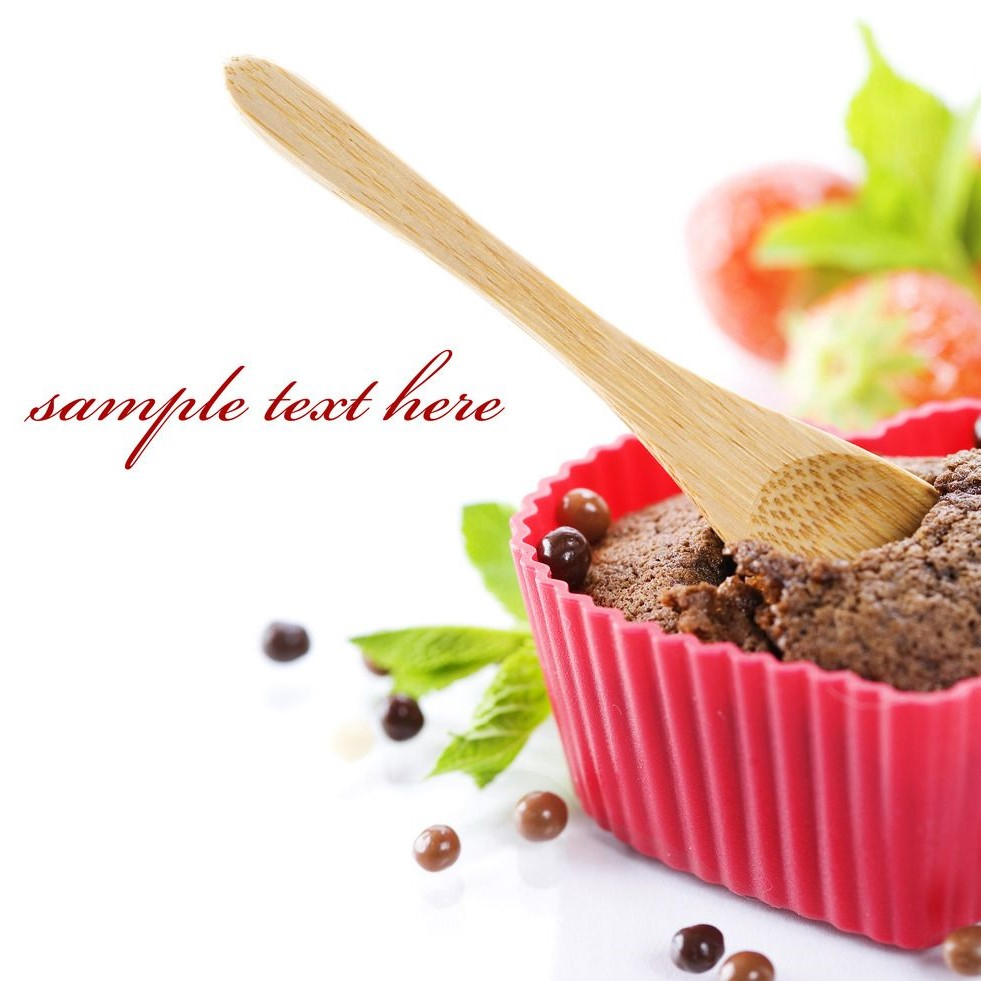

美食，是人们的最爱。而作为文明古城的临汾，几千年的传承，流传下来的不仅有辉煌的历史文化，更有让人垂涎欲滴的美食文化。如：洪洞的酥肉面、浮山的刀削面、隰县的梨等。夏天，一碗热辣辣的面，让人忘记酷暑。冬天，一碗热辣辣的面能抵挡彻骨严寒。
牛肉丸子面用一个字概括——“爽”，用两个字概括是“香辣”。牛肉丸子面中，有牛肉、丸子的香，还有秘制的汤，很辣很爽，吃起来大汗淋漓。满满一大碗面条上漂着红红的辣椒油，充满食欲感、溜圆的牛肉丸子伴着碧绿的香菜，纯朴简单的美味令人酣畅淋漓。
霍州年馍一种山西省的传统民俗工艺品，亦可食用。花馍可以说是山西特有的传统手工艺。它体现出了山西人民的智慧和才能，是具有北方特色的民间艺术品之一。
空心月饼是用熟油和上白面，用白糖、红糖、芝麻、碎花生仁、核桃仁、青红丝等拌成馅，在雕花的月饼模子里拓，磕出，在抹过油的热鏊烙，放入鏊下与火有适当距离的炉壁内烤而做成的月饼。乡宁月饼中空，壁厚不过半公分，特别酥，因此十分易碎。
太后御膳泡泡糕，是山西省临汾市侯马地区的著名特色糕类小吃之一，因油炸过的糕点表面起了许多鼓起来的泡泡而得名。泡泡糕以白面、猪油、陈皮、玫瑰、核桃仁、青梅、樱桃、白糖、香料等做原料，经过烫面、制馅、油炸等工序制作而成。吃起来香甜酥脆，味美可口。
吴家熏肉，是山西省临汾市的著名传统特色小吃之一，始创于清末时期，至今已有百余年的历史。吴家熏肉品种还有熏猪心、熏猪肝、熏猪蹄、熏猪肚、熏猪头等，食之肥而不腻，咸香浓郁，风味独特。